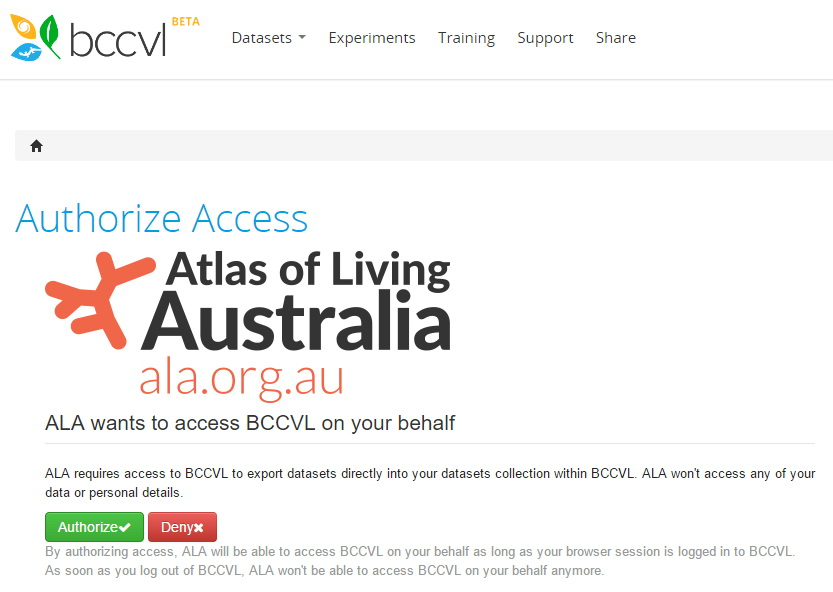

Compare areas is a simple tool that will show the differences between any two defined areas in terms of species composition and area. Areas can be generated or determined by any of the options available under Add to Map | Area. The inputs to the standard wizard are
- Species, species list or lifeform
- Identity of area 1
- Identity of area 2
Two areas for comparison
and the outputs are
- A pop-up window that reports
- the size, number of occurrences and number of species for each area
- Number of species only in area 1 (not area 2)
- Number of species only in area 2 (not area 1)
- Number of species in both areas
Compare areas pop-up window
- A CSV file that contains all the above and a list of species showing and if they occur in area 1 and area 2
Compare areas CSV
Article
Open infrastructure has global benefits
The Atlas of Living Australia (ALA) is a comprehensive biodiversity data management system for Australia and is also the Australian node for the Global Biodiversity Information Facility (GBIF). It is a world-class research tool and feeds Australian biodiversity data directly into the GBIF’s international data index.
The ALA is seen as a leader in biodiversity e-infrastructure as it was one of the first sites worldwide to aggregate existing biodiversity data into one place and provide tools to analyse and visualise that data. The key benefit of the ALA is that it is built on the principles of open data – the data is freely available and also the infrastructure is built using open source software so it can be easily replicated and repurposed.
Since 2014, the ALA and GBIF have worked together to facilitate other countries to develop biodiversity information platforms using ALA e-infrastructure. The ALA’s open source platform is becoming a critical component within the Global Biodiversity Information Facility network.
The ALA’s open source platform is becoming a critical component within the GBIF network. Spain, France, Costa Rica and Scotland have used ALA’s open infrastructure to help establish national biodiversity information portals, with several other countries investigating its use.
A list of those countries can be found below.
Implemented
- Spain (http://datos.gbif.es)
- France (http://portail.gbif.fr)
- Costa Rica (http://www.crbio.cr/crbio)
- Scotland (http://www.als.scot)
Implementing
- Argentina
- Portugal
- England, Wales and Northern Ireland
- UK (overarching)
Discussions
- Germany
- New Zealand
- Belgium?
- Norway
- Sweden
- Mexico (CONABIO)
- Symbiota (Northern Arizona) - looking at some of the Spatial Portal components
More info can be found on the GBIF website http://www.gbif.org/living-atlases
Article
Export to BCCvL
Export to BCCvL
This option will take any mapped point layer in the Spatial Portal and export it to the Biodiversity and Climate Change Virtual Laboratory site (bccvl). You would use this option only after cleaning/filtering your data to ensure that all records are fit for purpose for the analyses planned within bccvl. For example, you would want to remove duplicate records, records with poor spatial and temporal resolution or possibly records that have user assertions (user annotations) for say an SDM.
The primary way of cleaning records is to use the legend of the point layer, and select that facet (indexed variable) from the dropdown box to the right of “User defined colour”. You may want to examine some of the original Darwin Core terms such as “collectedBy” or “year”. You will certainly want to examine all of the “Record issues” and other facets in the class “Assertions”. The ALA and bccvl run joint workshops on the issues around filtering data in the ALA’s Spatial Portal and analysing it in the bccvl. To learn more, email suport@ala.org.au.
After clicking on “Export to bccvl”, you will get a window that will ask you to either login in to bccvl or to create a new account.
Login to bccvl or create a new account
After you login, you will then be asked to authorize the ALA to access your bccvl account so that the point layer can be exported there…You can authorize or deny. If you deny, then the only way to get filtered ALA data to the bccvl is to export it from the Spatial Portal as a CSV file and then import it after loggin into bccvl. “Authorize” makes the process simple.

Authorise access to BCCvL
After you authorize access of the Spatial Portal to bccvl, the Spatial Portal will display a window detailing all of the mapped point layers.
The layer to export to bccvl will usually be the last (top) point layer as the older versions will usually represent partially filtered versions of that final layer.
Select the point layer or layers that you want to export to bccvl for analyses and press the “Next” button as shown below.

Select the point layer to export to bccvl
Export to bccvl succesful
If the process goes to plan, you should see a new window that shows that the export has been successful. This window contains a link to bccvl. If you click on it, you will be taken directly to your data pages in bccvl and the layer name should be first on the list.

Exported point layer in bccvl data
Article
Webinar by Arthur Chapman on the history of biodiversity informatics
Arthur Chapman
29 January 2016, 0900 EDT Australia
Google+:https://plus.google.com/events/coiklff179p1r8jng8pbf1k9cok
YouTube: http://www.youtube.com/watch?v=w5_y6o9GVVs
As part of the BITC’s global online seminar series, Arthur Chapman, a key figure in both the history and the present of biodiversity informatics, will present the first in a multi-part series on the history of Biodiversity Informatics. The seminar will be entitled “History of Biodiversity Informatics — The Early Years of Innovation,” and will provide an overview of the beginnings of the field. Subsequent months’ seminars will treat more recent periods, with presentations from Jorge Soberon, John Wieczorek, and others.
Article
Point Comparisons
Point Comparisons
This option is presented as a quick way of comparing the environments of a few points. The alternative is to use Export | Point sample where environmental data is appended to an existing set of points, which are usually species occurrences, but can also be any set of points that have been imported. Point comparisons simply use mouse clicks on the map of a few points and the result is a display of those points (forming columns in the legend area) across all layers (rows in the legend area).
First, zoom and pan to the area of interest and then click on Add point. You can then edit the point or remove it from the list. Once you have defined your points, then simply click on Compare and the list of layer values will be displayed for each point. Given the limited area of the legend, only 9 or so points can be displayed. Once displayed however, the CSV file can be downloaded for analysis.
A portion of the downloaded CSV file has been sorted for the difference between the first two sites just to demonstrate the type of analysis that can be done.
Article
Area of Occupancy and Extent of Occurrence
Eucalyptus gunnii AOO and EOO
AOO and EOO
Area of Occupancy (AOO) and Extent of Occurrence (EOO) are two ‘statistics’ used by the IUCN for their Red List of Threatened Species (http://www.iucnredlist.org/). Their Red List of Categories and Criteria (IUCN 2012) defines these terms as follows-
“Area of occupancy [AOO] is defined as the area within its ‘extent of occurrence’ which is occupied by a taxon, excluding cases of vagrancy. The measure reflects the fact that a taxon will not usually occur throughout the area of its extent of occurrence, which may contain unsuitable or unoccupied habitats. In some cases (e.g. irreplaceable colonial nesting sites, crucial feeding sites for migratory taxa) the area of occupancy is the smallest area essential at any stage to the survival of existing populations of a taxon. The size of the area of occupancy will be a function of the scale at which it is measured…” See Figure 2 IUCN 2012 below. The IUCN recommendation for the grid size used to calculate AOO is 2km but is user-defineable This grid is placed over all selected taxon records within the user-defined area.
Extent of occurrence [EOO] is defined as the area contained within the shortest continuous imaginary boundary which can be drawn to encompass all the known, inferred or projected sites of present occurrence of a taxon, excluding cases of vagrancy (see below Figure 2 IUCN 2012). This measure may exclude discontinuities or disjunctions within the overall distributions of taxa (e.g. large areas of obviously unsuitable habitat)… Extent of occurrence can often be measured by a minimum convex polygon (the smallest polygon in which no internal angle exceeds 180 degrees and which contains all the sites of occurrence). In the Spatial Portal, EOO is calculated as the minimum convex hull based on the “presence” taxon occurrence records within the user-defined area.
Figure 2 from IUCN (2012). IUCN Red List Categories and Criteria: Version 3.1. Second edition. Gland, Switzerland and Cambridge, UK: IUCN. iv + 32pp. http://jr.iucnredlist.org/documents/redlist_cats_crit_en.pdf
AOO and EOO would normally be calculated on taxa that have some ‘conservation sensitivity’. The ALA uses the term “Threatened” for any level or class of conservation status via the States, Territories, Federal Government or IUCN. Any species that is deemed ‘sensitive’ in having some State/Territory or Federal conservation status will be processed through the Sensitive Data Service (SDS: http://www.ala.org.au/faq/data-sensitivity/). The Sensitive Data Service may have changed the location of taxa that have a sensitive status. It is therefore wise to
- Map the taxa,
- Examine online or download the records to identify any data sensitivity, record fields and particularly, any assertions
- Filter these records in the Spatial Portal (see how to use faceting and filtering) to create the desired subset
- Run the tool on the new filtered taxa layer
The tool requests
- The area to be used as a bounding area for the calculation of AOO and EOO
- The taxa to be used (this can be a species list)
- The grid size to be used for AOO (default 2km)
The outputs are
- The number of records used for the calculations
- The taxa used
- Area of Occupancy (AOO: sq.km)
- Extent of Occurrence (EOO: sq.km)
- New point layer of the taxa occurrence
- New area layer: AOO
- New area layer: EOO (the minimum convex hull)
The statistics are downloaded automatically to your system as a text file and named as “Calculated AOO and EOO.txt”
NOTE: We hope that ‘full spatial resolution’ records will be able to be made available for this analysis in the near future, but mapping high-resolution data would be disabled, except for authorised users.
Generating Co-occurence/Co-location lists
Tools | AOO and Tools | Area report can be used as an efficient way of generating lists of species are co-located (co-occur) with a target species or species list. For example, to identify which species co-occur with say within 1km of occurrences of Casuarina obesa in Westerna Australia, go through the following steps
- Ad to map | species | Casuarina obesa
- Zoom and pan to the area of interest, in this case, Western Australian records
- Tools | AOO and EOO | Area=current extent | Casuarina obesa | 0.01 (~1km)
- Tools | Area report | Area of occupancy (area): Casuarina obesa
- In the Area report pop-up window, click on List button next to “Number of species - spatially valid only”
- In new pop-up, press the Next button as the defaults should be correct
- A table of species is produced and this can be downloaded as a CSV file by pressing the Download button
Species that occur within 1km of Casuarina obesa
References
IUCN (2012). IUCN Red List Categories and Criteria: Version 3.1. Second edition. Gland, Switzerland and Cambridge, UK: IUCN. iv + 32pp. http://jr.iucnredlist.org/documents/redlist_cats_crit_en.pdf
Joppa, L. N., Butchart, S. H. M., Hoffmann, M., Bachman, S. P., Akçakaya, H. R., Moat, J. F., Böhm, M., Holland, R. A., Newton, A., Polidoro, B. and Hughes, A. (2016), Impact of alternative metrics on estimates of extent of occurrence for extinction risk assessment. Conservation Biology, 30: 362–370. doi:10.1111/cobi.12591 [” We conclude that a single, relatively resolutionindependent measure to calculate EOO (MCP)—as recommended by current IUCN Red List guidelines— will allow for assessments across species and taxonomic groups to be comparable over space and time and will ensure far greater consistency across the IUCN Red List.”]
R CRAN package for generating AOO, EOO, MBP etc for IUCN stats: https://cran.r-project.org/web/packages/rCAT/index.html
Article
Generate points
This tool enables a regular square grid of points to be generated over any user-defined area. It is anticipated that the points generated would be used to sample any of the environmental or contextual layers in the Spatial Portal. For example, a summary of the environment of an area could be calculated by generating the grid points, sampling the relevant layers and then analyzing the exported sample.
There are three parameters for this tool
- An area - predefined or generated on the fly
- A grid size in decimal degrees (0.01 degree roughly = 1km)
- The name of the point layer to be generated.
Article
Foundations for the Future
Foundations for the future: a long-term plan for Australian ecosystem science was launched by the Chief Scientist of Australia Prof Ian Chubb AC last week in Canberra. The final document has arisen from the proposals developed through many ‘town hall workshops’ across the country, and these proposals also form the basis for its implementation. The Plan identifies six equal priority areas for action over the coming years:
- Delivering maximum impact for Australia: enhancing relationships between scientists and end-users
- Supporting long-term research
- Enabling ecosystem surveillance
- Making the most of data resources*
- Inspiring a generation: empowering the public with knowledge and opportunities
- Facilitating coordination, collaboration and leadership
*The PRIORITY Making the most of data resources is most relevant to the Atlas of Living Australia-
“Sustained infrastructure and capacity for consistent collection, publication and archiving of ecosystem science data sets and meta-data in standard, easily accessible formats in publicly accessible websites. Australia needs sustained infrastructure and capacity-building to maintain and facilitate the publication of and access to ecosystem science data. We can get better value from our collective data resources by properly describing and storing data in ways that enable discovery, access and re-use. Significant gains have been made in recent years, but there is currently no coordinated national strategy for collecting, storing and accessing core ecosystem science data across terrestrial, aquatic and atmospheric domains. Moving Australian ecosystem science to a position of open access to both historical and current data can enable research communities to build time series at a scale well beyond that which they could achieve individually. Synthesis, analysis and modelling of collective data will help to deliver essential outputs for government, industry and society.”
You can listen to Prof Chubb talking about it on Radio National at: http://www.abc.net.au/radionational/programs/drive/national-plan-to-protect-ecosystems-launched/5599308
Article
Biogeographic patterns and climate change – a teaching resource for university lecturers
A Case Study
Simon Connor
School of Earth, Atmosphere and Environment, Monash University
This case study describes a practical exercise developed for students in the School of Geography and Environmental Science at Monash University. The exercise is based around simple bioclimatic modelling techniques and designed for first-year university students of biogeography, ecology and climatology. It incorporates aspects of past, present and future climates and their impact on species distributions, particularly in Victoria, but could be easily modified to suit any part of Australia.
Context
Climate change is one of the biggest issues facing Australia’s biodiversity. Some of the country’s ecosystems are considered to be particularly vulnerable to increased temperatures and changing rainfall patterns (Laurance et al., 2011) and our species may have to migrate long distances across fragmented landscapes in order to survive (Hughes, 2014). Knowing what will happen to various species and ecosystems is vital to ensuring that conservation and management efforts are applied where they are most needed.
It is also important to increase public awareness of current threats to Australia’s unique biodiversity. A public understanding of the methods scientists use to predict biodiversity changes into the future is a responsibility of scientists. Too often scientific research remains hidden in journals accessible only to academics. Universities have enormous opportunities to influence public engagement in science through their education programmes. This exercise aimed at helping students to create their own bioclimatic models may also give the public insights into how scientists are grappling with the future of Australia’s biodiversity.
The exercise
The practical exercise has three main parts: the first is on animal distributions under current and future climates; the second concerns plant distributions in the past and present; and the third part looks at how rare and endangered species may respond to future climate change in alpine environments.
The first part focuses on the brushtail possum (Trichosurus vulpecula) and the ringtail possum (Pseudocheirus peregrinus), which are common marsupials in Melbourne backyards and familiar to most students. We use the Atlas of Living Australia (ALA) to examine the possums’ distributions in Australia and compare them to maps of annual mean temperature and annual rainfall (two basic climatic variables, though not necessarily the most important for possum distributions!) Possum distributions are then projected into climate space using the Scatterplot function in the ALA and the students identify the core range of each species. They then modify the temperature and rainfall of Melbourne, Adelaide and Sydney according to climate predictions for 2070 to see whether any of these cities will fall outside the core range of the two possum species by 2070. The students are then asked to use their predictions to decide where to prioritise possum conservation efforts among the three cities.
The second part concerns the Southern Beech (Nothofagus cunninhamii), a long-lived, late-successional tree found in cool-temperate rainforests in southern Australia. We give the students some basic ecological information about this species, along with distribution maps and a table with selected bioclimatic variables for its current range. Students compare the current bioclimate of Nothofagus cunninghamii with that of Buxton, an area where the species apparently went extinct around 6,000 years ago (McKenzie & Busby, 1992). They also compare the current bioclimate to that of Falls Creek, a well-known ski village on the Bogong High Plains. Based on their observations, the students come up with an explanation for the local extinction of beech at Buxton and the reasons why it does not currently live at Falls Creek. This part of the exercise emphasises the potentially important role of palaeoecological data in reconstructing the climates of the past, and also highlights the importance of ecological factors such as dispersal rates and fire sensitivity. The lecture that accompanies the practical exercise also raises the possibility that the intensification of the El Niño Southern Oscillation (ENSO) during the mid-Holocene may have impacted the species.
The final part of the practical exercise relates to two rare or endangered species on the Bogong High Plains: a plant, the Bogong Eyebright (Euphrasia eichleri), and a mammal, the Mountain Pygmy Possum (Burramys parvus). The Bogong High Plains are part of the Australian Alps and include Victoria’s highest peak, Mt Bogong (1986 m). The ALA’s Predict function is employed to create niche models for the two species based on the “best 5 independent terrestrial layers”. Although these layers may not necessarily be the most appropriate for the two species in question, it is an easy introduction for students before experimenting with the 400+ layers available through the ALA (see discussion in Williams et al., 2012). Environmental lapse rates are then introduced and used to predict how a 3 °C temperature rise might impact on species distributions. The students map the current and future ranges of the two species to translate their altitude-based predictions back into geographical space. Finally, the exercise congratulates the next generation of bioclimatic modellers for their efforts and encourages them to think more broadly about non-climatic factors that could be critical to the management of rare and endangered species.
Review
This exercise was introduced to first-year physical geography classes at Monash in 2013 and was well received by students and their demonstrators. Although the practical class could not be held in a dedicated computer lab, students appreciated the option to use their own computer and experiment with the ALA during class time. A handful of students completed the exercise in less than an hour; the remainder completed it within the two hours allocated. There was also a strong link between the lecture material and the practical class, so the relevance of the exercise to the lectures was clear. Most students clearly understood the importance of what they were doing and gained an appreciation of the potentials and pitfalls of bioclimatic modelling. This was reflected in high levels of engagement and high marks for the exercise. On completing the map on the final page of the exercise, one student declared, “Well, I guess that plant is stuffed!” Using the publicly available ALA data and tools empowers students to make their own scientifically informed decisions about biodiversity issues in Australia and encourages independent exploration and experimentation. Despite the simplicity of the practical exercise’s approach to bioclimatic modelling, it lays the groundwork for more sophisticated modelling if students decide to pursue this in later years.
The ALA proved to be an excellent educational tool in this context. Its unique combination of user-friendly interface and powerful modelling capabilities makes it far more amenable to student work than any available alternative. It is difficult to imagine any other application that allows students to create professional-standard distribution maps, bioclimatic scatterplots and niche models so simply, quickly and intuitively. The inclusion of species photo galleries and the possibility of contributing to citizen science data were also attractive to students. Minor drawbacks include the presence of fossil data in the ALA. Such records may be difficult to detect without examining records individually. There are also some noticeable data gaps where agencies have not provided information to the ALA (e.g. brushtail possum records from the Department of Environment and Primary Industry, Victoria – but these records along with many others are in the process of being added).
It is hoped that others will adapt this practical exercise and report back to the ALA with new exercises, improvements, suggestions and tips. The ALA is a tremendous educational resource, so let’s all start talking about how best to use it. The possibilities are only limited by our imagination!
References
Hughes, L. (2014) Changes to Australian terrestrial biodiversity. In: Christoff, P. (ed.) Four Degrees of Global Warming: Australia in a Hot World. Routledge, Oxon (UK), pp. 63-83.
Laurance, W.F., Dell, B., Turton, S.M., Lawes, M.J., Hutley, L.B., McCallum, H., Dale, P., Bird, M., Hardy, G., Prideaux, G., Gawne, B., McMahon, C.R., Yu, R., Hero, J.-M., Schwarzkopf, L., Krockenberger, A., Douglas, M., Silvester, E., Mahony, M., Vella, K., Saikia, U., Wahren, C.-H., Xu, Z., Smith, B. and Cocklin, C. (2011) The 10 Australian ecosystems most vulnerable to tipping points. Biological Conservation 144: 1472–1480.
McKenzie, G.M. and Busby, J.R. (1992). A quantitative estimate of Holocene climate using a bioclimatic profile of Nothofagus cunninghamii (Hook) Oerst. Journal of Biogeography, 19: 531-540.
Williams K.J., Belbin L., Austin, M.P., Stein, J. and Ferrier, S. (2012). Which environmental variables should I use in my biodiversity model? International Journal of Geographic Information Sciences 26: 2009-2047. http://www.tandfonline.com/doi/pdf/10.1080/13658816.2012.698015
Article
2014 Atlas of Living Australia Science Symposium
With the 2014 ALA Science Symposium now fading into memory I wanted to record a few thoughts about this year’s event.
The focus of the previous (2013) ALA Symposium was the achievements of the project and our wider partner community. This year we shifted some of the focus to where we are going, what we are currently working on, and what you can expect to see soon. There was still room for some reflection, with the panels providing a great opportunity for conversations as a group about where we want to head.
We had a full program, with many stimulating talks and a couple of chances for lively discussion. Copies of the presentations can be found HERE, and many thanks to the authors who have made them available.
We have had nothing but positive feedback on the symposium – and most particularly on the quality and enthusiasm of the various participants. For me one of the main successes of the Symposium was seeing how the Atlas community is coming together and is excited about our shared future. As stimulating as the presentations and discussions were, the sense of excitement I saw in the room during the breaks was even more impressive. Everywhere there were lively discussions, interested people getting more information from presenters, and various networks being formed to develop and progress some of the emerging ideas.
I would like to thank everyone who helped make the 2014 Atlas of Living Australia Science Symposium such a success. This includes presenters, moderators, panellists, the Atlas staff who worked so hard at the organisation – but also all the participants who contributed through attending and creating such a lively atmosphere. This high level of community engagement is compelling evidence of a strong future for the Atlas.
Looking forward to seeing everyone at our next Symposium!
John La Salle

{kind=link}
{kind=link}
{kind=link}
{kind=link}
{kind=link}